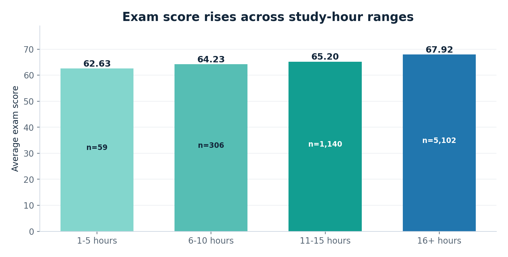
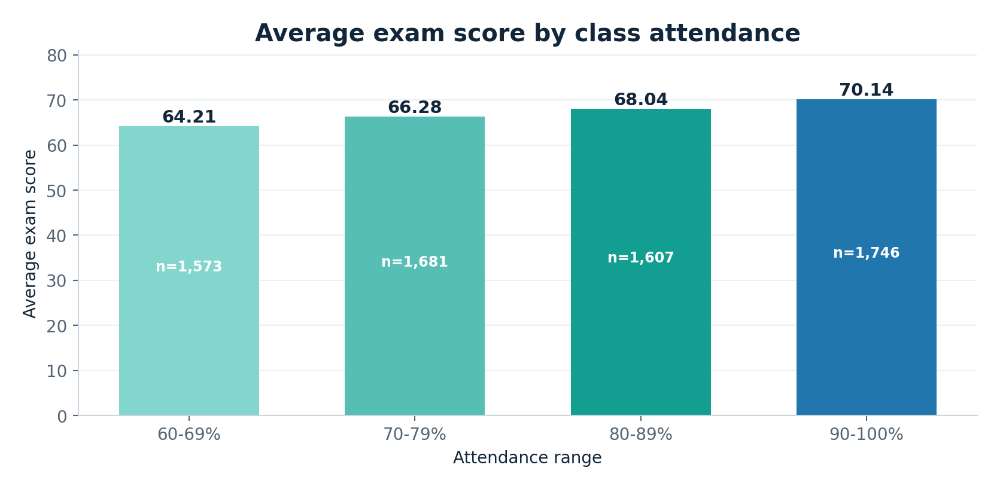
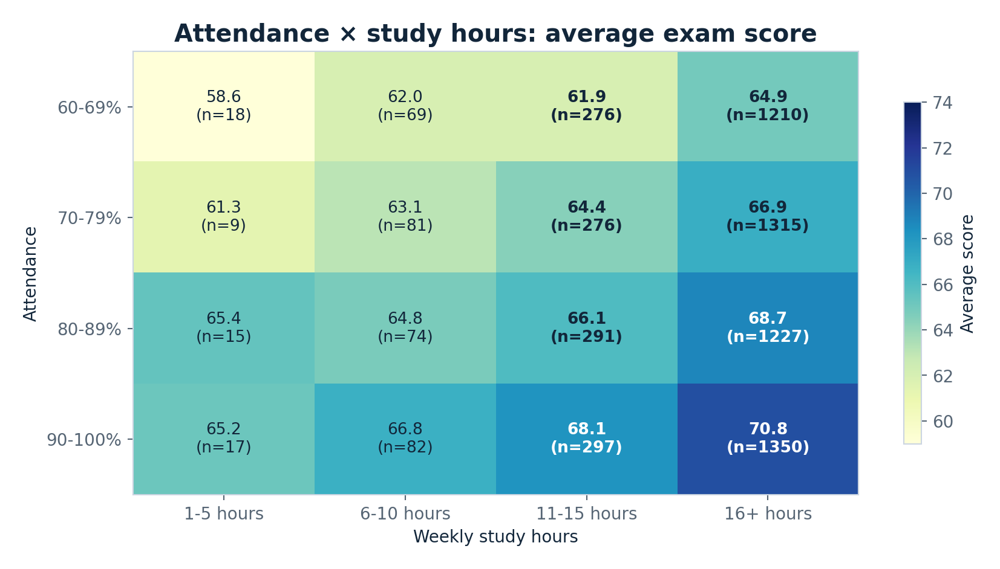
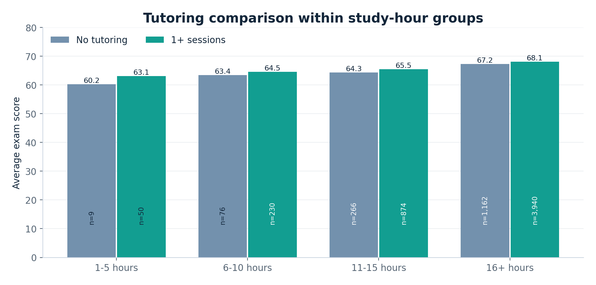
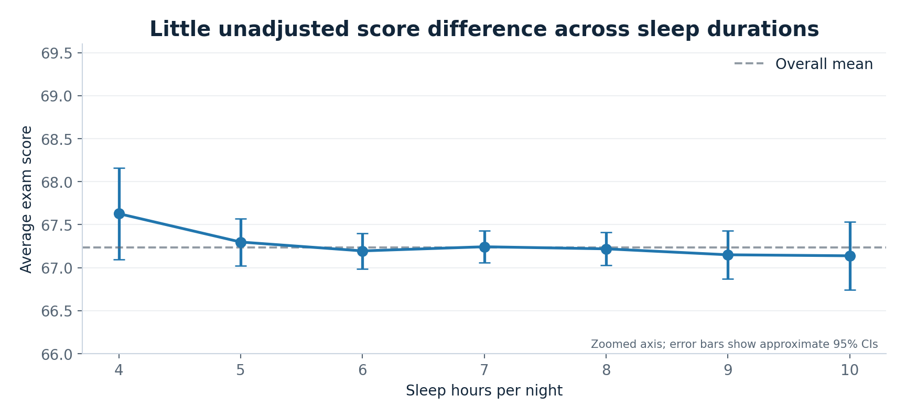
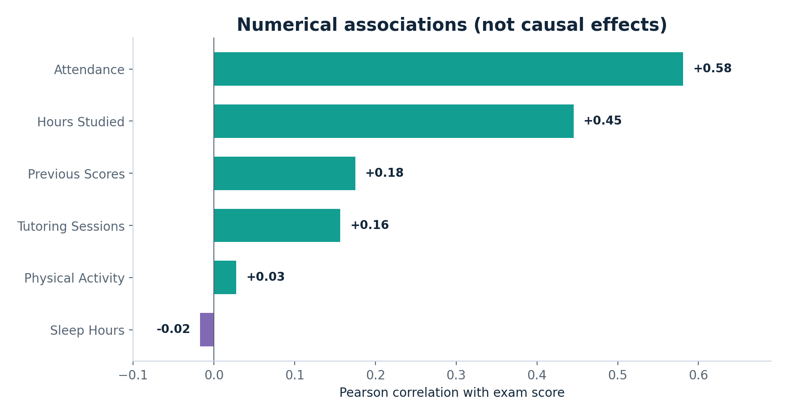

A readable, reproducible exploration of 6,607 synthetic student records, with SQL queries, Python analysis and a Power BI-ready dataset.

Scores are higher on average in longer-study groups, but sample sizes are uneven.

The 90–100% attendance band averages 70.14 versus 64.21 in the 60–69% band.

Each cell shows its sample size: inspect attendance and study hours together.

The within-study-hour comparisons remain descriptive, not a tutoring treatment effect.

Nearly flat observed differences; the vertical axis is zoomed and labeled.

Attendance and study hours have larger observed numeric correlations with the exam score.
The raw dataset contains 78 missing teacher-quality values, 90 missing parental-education values, 67 missing distance values and a single exam score of 101. Missing text values become "Unknown" in the Power BI export; the out-of-range score is retained and flagged for transparent sensitivity checks. Because these data are synthetic, the results should not be generalized to actual schools.
The notebooks/student_performance_analysis.ipynb file contains executable analysis. The powerbi/ folder contains the data, theme, DAX and step-by-step report instructions; a native PBIX needs to be saved from Power BI Desktop.